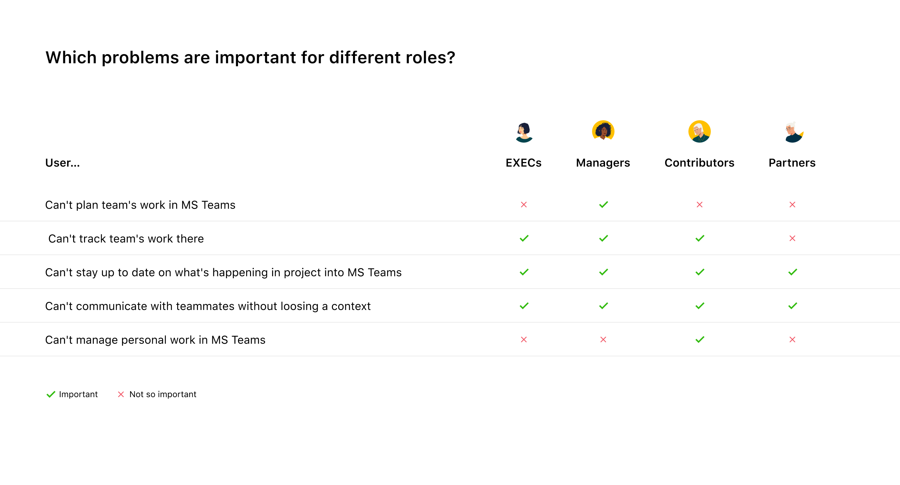
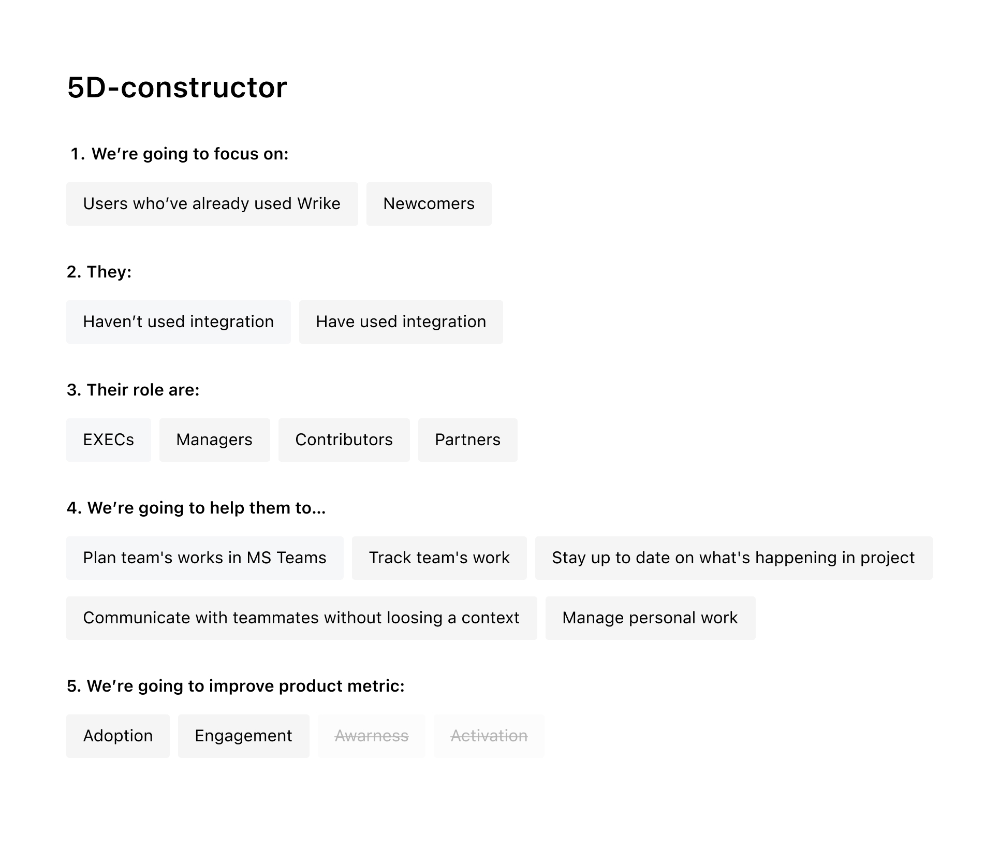
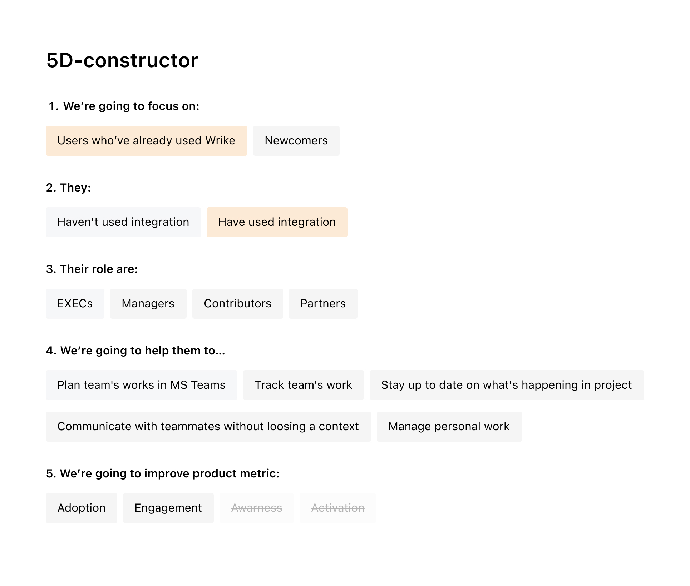
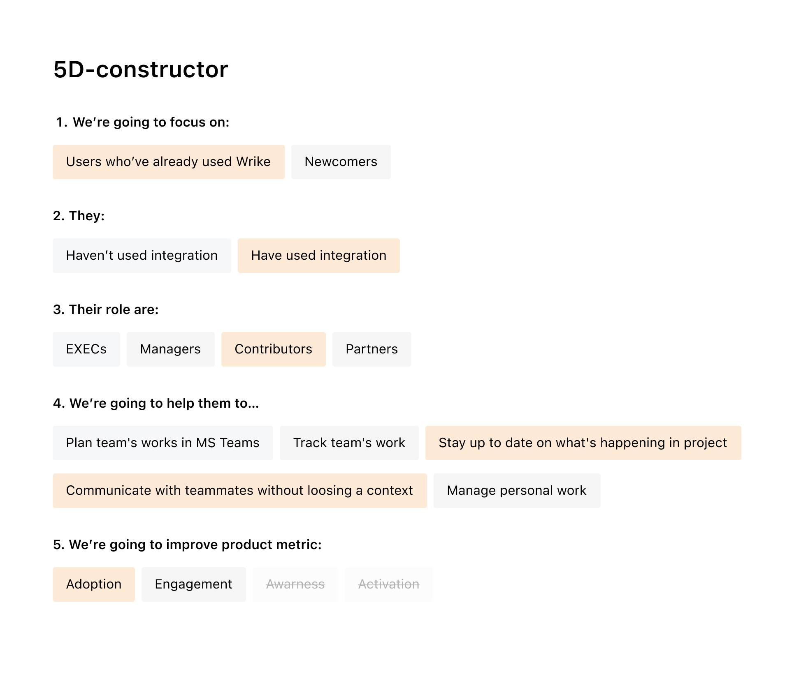
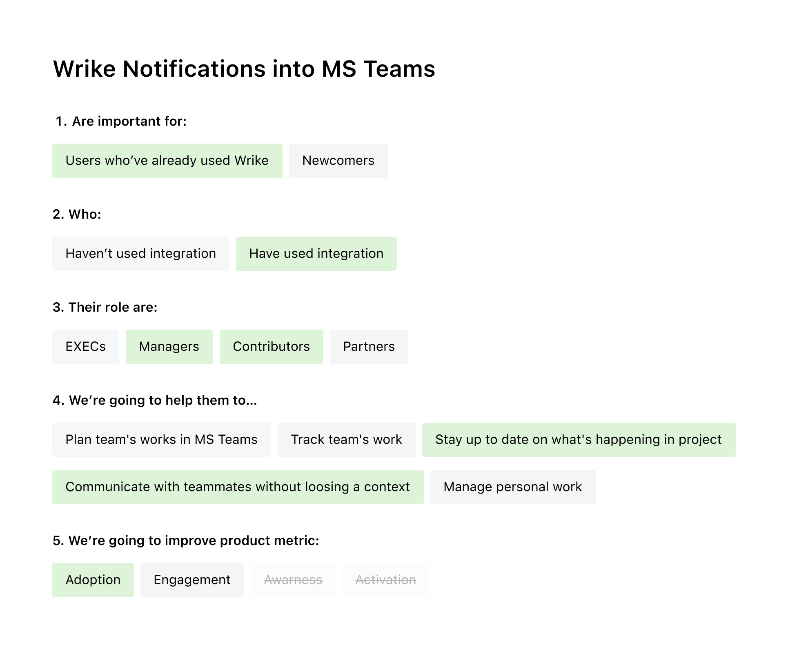
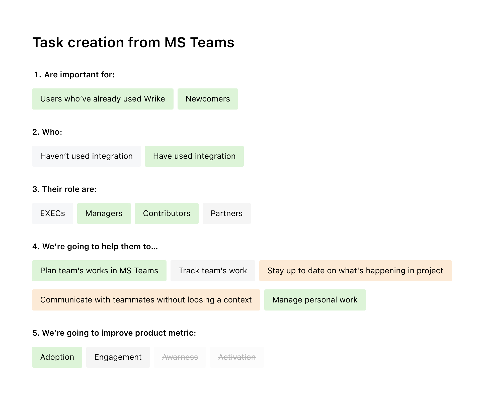

<!DOCTYPE html>
<html>
  <head>
    <meta charset="utf-8">
    <meta name="viewport" content="width=device-width, initial-scale=1.0">
    <meta name="description" content="Рассказываю на&amp;nbsp;примере интеграции между&amp;nbsp;двумя системами, как перестать делать лишнюю работу и&amp;nbsp;реально помогать пользователям">
    <meta property="og:type" content="article">
    <meta property="og:title" content="Как перестать блуждать ёжиком в&amp;nbsp;тумане и&amp;nbsp;улучшать продукт разумно • Артём Самсонов • Продуктовый дизайнер">
    <meta property="og:description" content="Рассказываю на&amp;nbsp;примере интеграции между&amp;nbsp;двумя системами, как перестать делать лишнюю работу и&amp;nbsp;реально помогать пользователям">
    <meta property="og:image" content="http://artemsamsonov.com/img/case-01.jpg">
    <meta property="og:locale" content="ru_RU">
    <meta name="twitter:card" content="summary_large_image">
    <meta name="twitter:title" content="Как перестать блуждать ёжиком в&amp;nbsp;тумане и&amp;nbsp;улучшать продукт разумно • Артём Самсонов • Продуктовый дизайнер">
    <meta name="twitter:description" content="Рассказываю на&amp;nbsp;примере интеграции между&amp;nbsp;двумя системами, как перестать делать лишнюю работу и&amp;nbsp;реально помогать пользователям">
    <meta name="twitter:image" content="http://artemsamsonov.com/img/case-01.jpg">
    <link href="https://fonts.googleapis.com/icon?family=Material+Icons" rel="stylesheet">
    <link rel="stylesheet"><!-- Yandex.Metrika counter --> <script type="text/javascript" > (function(m,e,t,r,i,k,a){m[i]=m[i]||function(){(m[i].a=m[i].a||[]).push(arguments)}; m[i].l=1*new Date();k=e.createElement(t),a=e.getElementsByTagName(t)[0],k.async=1,k.src=r,a.parentNode.insertBefore(k,a)}) (window, document, "script", "https://mc.yandex.ru/metrika/tag.js", "ym"); ym(88097279, "init", { clickmap:true, trackLinks:true, accurateTrackBounce:true, webvisor:true }); </script> <noscript><div></div></noscript> <!-- /Yandex.Metrika counter -->
    <title>Как перестать блуждать ёжиком в&amp;nbsp;тумане и&amp;nbsp;улучшать продукт разумно • Артём Самсонов • Продуктовый дизайнер</title>
    <script type="application/ld+json">
      {
        "@context": "https://schema.org",
        "@type": "Person",
        "name": "Артём Самсонов",
        "url": "https://artemsamsonov.com",
        "image": "https://artemsamsonov.com/og-preview.jpg",
        "sameAs": [
          "https://t.me/forrrealism",
          "https://www.linkedin.com/in/a-samsonov/"
        ],
        "jobTitle": "Ведущий продуктовый дизайнер",
        "worksFor": {
          "@type": "Organization",
          "name": "getmatch"
        }
      }
    </script>
  <link href="./css/style.bundle.css" rel="stylesheet"></head>
  <script type="application/ld+json">
    script(type="application/ld+json").
      {
        "@context": "https://schema.org",
        "@type": "CreativeWork",
        "name": "Редизайн интеграции Wrike в Microsoft Teams",
        "description": "Рассказываю на примере интеграции между двумя системами, как перестать делать лишнюю работу и реально помогать пользователям",
        "author": {
          "@type": "Person",
          "name": "Артём Самсонов",
          "url": "https://artemsamsonov.com"
        },
        "datePublished": "2024-08-05",
        "url": "https://artemsamsonov.com/msteams-rebuild",
        "inLanguage": "ru",
        "keywords": [
          "Microsoft Teams",
          "UX редизайн",
          "Чат-боты",
          "Продуктовый дизайн",
          "UX архитектура",
          "Интерфейсы для команд",
          "Wrike"
          "Артём Самсонов"
        ],
        "image": "http://artemsamsonov.com/img/case-01.jpg"
      }
  </script>
</html>
<body class="body_light">
  <header class="header header_light">
    <div class="header__logo"><a href="index.html">Артём Самсонов</a></div>
    <div class="header__menu"><a class="header__menu-elem" href="https://t.me/forrrealism">telegram</a><a class="header__menu-elem" href="https://www.linkedin.com/in/a-samsonov/">linkedin</a></div>
  </header>
  <div class="content">
    <div class="article">
      <section>
        <h1>Как перестать блуждать ёжиком в&nbsp;тумане и&nbsp;улучшать продукт разумно</h1>
        <p class="article__annotation">Рассказываю на&nbsp;примере интеграции между&nbsp;двумя системами, как перестать делать лишнюю работу и&nbsp;реально помогать пользователям.</p>
        <div class="article__list">
          <h4>Содержание статьи</h4><a href="#intro">Предисловие. Как мы допустили ошибку</a><a href="#step1">Этап 1. Общаемся с&nbsp;клиентами</a><a href="#step2">Этап 2. Формируем стратегию</a><a href="#step3">Этап 3. Выбираем конкретные задачи</a><a href="#step4" id="intro">Был ли данный эксперимент полезен?</a>
        </div>
      </section>
      <section>
        <h2>Предисловие. Как мы допустили ошибку</h2>
        <p>Если вы хотите управлять проектами, одного приложения недостаточно. Именно поэтому work-management платформы Wrike, Asana, Jira охотно интегрируются с&nbsp;приложениями вроде Zoom, Outlook или&nbsp;Slack — они хотят сделать работу клиентов более связной и&nbsp;комплексной.</p>
        <p>Нередко платформы интегрируются с&nbsp;другими продуктами наобум — добавляют свои самые популярные функции в&nbsp;чужую экосистему и&nbsp;напрасно ждут успеха. Компания Wrike допустила ту же ошибку. Наше приложение для&nbsp;MS Teams было лишь бледной копией основной версии. Пользователи MS Teams устанавливали интеграцию Wrike из&nbsp;внутреннего маркетплейса, но&nbsp;почти не&nbsp;использовали её в&nbsp;ежедневной работе. Аудитория интеграции росла медленно, компании не&nbsp;докупали расширенные планы.</p>
        <p>Пока мы тратили время и&nbsp;ресурсы на&nbsp;поддержку приложения в&nbsp;чужой экосистеме, наши пользователи переключались между&nbsp;окнами основных приложений и&nbsp;даже не&nbsp;вспоминали об&nbsp;интеграции.</p>
        <p>Тогда мы остановились и&nbsp;признались сами себе, что мы движемся не&nbsp;туда. Мы решили перепридумать интеграцию — так, чтобы она действительно была полезна как нашим юзерам, так и&nbsp;нашей компании.</p>
        <p id="step1">И&nbsp;первым делом мы решили лучше изучить наших клиентов.</p>
      </section>
      <section>
        <h2>Этап 1. Общаемся с&nbsp;клиентами</h2>
        <p>Мы отобрали около двадцати пользователей, которые уже пробовали пользоваться Wrike-интеграцией в&nbsp;MS Teams. Они занимали разные должности в&nbsp;своих компаниях и, как оказалось, пытались решить с&nbsp;помощью нашей интеграции разные проблемы.</p>
        <p>После интервью мы разделили всех пользователей на&nbsp;четыре роли и&nbsp;отметили, какие именно проблемы были для&nbsp;них важными, а&nbsp;какие — второстепенными:</p>
        <p class="article__image"><a href="../img/msteams-01.jpg" target="_blank"></a></p>
      </section>
      <section>
        <h2>Этап 2. Формируем стратегию</h2>
        <p>Опираясь на&nbsp;результаты исследований, мы составили 5D-конструктор, который вмещал в&nbsp;себя все возможные комбинации пользователей:</p>
        <p class="article__image"><a href="../img/msteams-02.jpg" target="_blank"></a></p>
        <p>С&nbsp;помощью этого конструктора мы определили наиболее приоритетное направление. Во-первых, мы решили сфокусироваться на&nbsp;тех пользователях, что уже знакомы с&nbsp;Wrike и&nbsp;пробовали работать в&nbsp;интеграции. Мы понимали, что пока мы не&nbsp;решим их проблемы, привлекать новых пользователей не&nbsp;имеет смысла.</p>
        <p class="article__image"><a href="../img/msteams-02b.jpg" target="_blank"></a></p>
        <p>Чаще всего нашу интеграцию устанавливали Работники (Contributors). Мы выбрали их нашей приоритетной ролью. Также мы выбрали две цели, которые мы поможем достичь Работникам с&nbsp;помощью интеграции. Мы выбрали эти цели, потому что они были максимально популярными у&nbsp;всех ролей. Мы надеялись, что грядущие нововведения закроют потребности максимальному количеству пользователей.</p>
        <p>Напоследок мы определили продуктовую метрику, на&nbsp;которую хотели повлиять:</p>
        <p class="article__image"><a href="../img/msteams-02c.jpg" target="_blank"></a></p>
      </section>
      <section>
        <h2>Этап 3. Подбираем конкретные задачи</h2>
        <p>Во&nbsp;время интервью Работники чаще всего просили:</p>
        <ul>
          <li><span>Присылать в&nbsp;чаты уведомления об&nbsp;изменениях в&nbsp;проекте: смену статусов и&nbsp;ответственных, упоминания в&nbsp;комментариях</span></li>
          <li><span>Заменить плоский список задач на&nbsp;Проводник для&nbsp;того, чтобы видеть структуру проектов</span></li>
          <li><span>Добавить возможность создавать задачи прямо в&nbsp;MS Teams</span></li>
        </ul>
        <p>Мы наложили запросы пользователей на&nbsp;наш 5D-конструктор и&nbsp;посмотрели, какие именно просьбы совпадают с&nbsp;выбранным нами направлением:</p>
        <p class="article__image"><a href="../img/msteams-03.jpg" target="_blank"></a><span class="article__image-caption">Задача "Нотификации в&nbsp;чаты" совпала с&nbsp;нашей новой стратегией на&nbsp;100%</span></p>
        <p class="article__image"><a href="../img/msteams-03b.jpg" target="_blank"></a><span class="article__image-caption">А&nbsp;вот «Создание задачи прямо из&nbsp;MS Teams» немного разошлась с&nbsp;нашими целями (уровень 4)</span></p>
        <p id="step4">Читайте подробнее: <a href="msteams-notifications.html">Как мы проектировали нотификации для&nbsp;MS Teams</a>
        </p>
      </section>
      <section>
        <h2>Был ли данный эксперимент полезен?</h2>
        <p>Безусловно, да.</p>
        <p>Теперь, когда разработчики спрашивали нас «Почему мы делаем нотификации, а&nbsp;не&nbsp;добавляем в&nbsp;интеграцию дэшборды?», мы могли показать им выбранную нами стратегию и&nbsp;объяснить, что нотификации, в&nbsp;отличие от&nbsp;дэшбордов, улучшат жизнь наибольшему количеству пользователей.</p>
        <p>Также мы смогли двигаться по&nbsp;выбранному пути несколько кварталов и&nbsp;в&nbsp;конце периода сравнивать показатели до&nbsp;и&nbsp;после. Если результаты нас не&nbsp;устраивали, мы могли переключить наш фокус на&nbsp;другую комбинацию.</p>
        <p>Бизнес-департамент убедился, что мы не&nbsp;бродим вслепую, а&nbsp;планомерно изучаем сегмент за&nbsp;сегментом, ища точки роста для&nbsp;бизнеса.</p>
        <p>И, конечно же, мы сгруппировали пользователей и&nbsp;могли теперь проводить точечные исследования. Отныне мы приглашали разные роли потестировать новый функционал и&nbsp;смотрели, удалось ли нам решить их проблему.</p>
        <p>На&nbsp;каждый шаг у&nbsp;нас имелся аргумент — и&nbsp;это сэкономило миллионы нервов всем участникам проекта.</p>
      </section>
    </div>
  </div>
<script type="text/javascript" src="./js/bundle.js"></script></body>